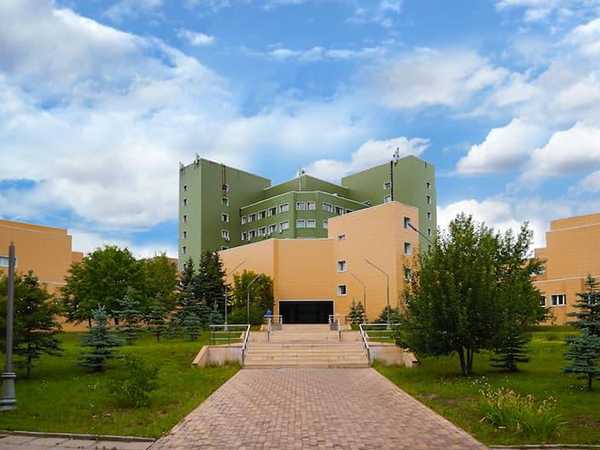
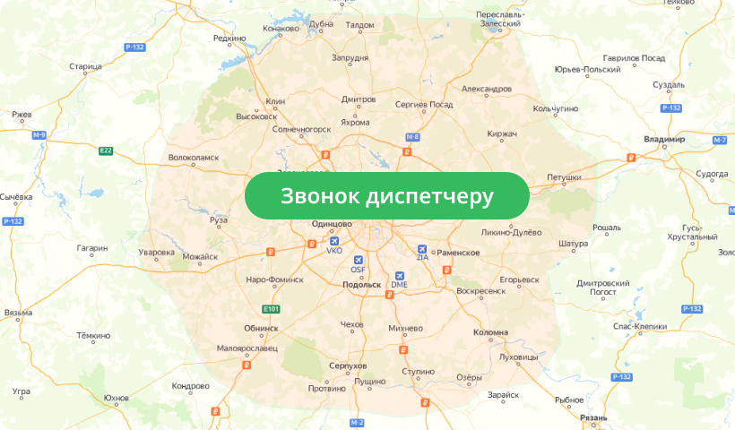
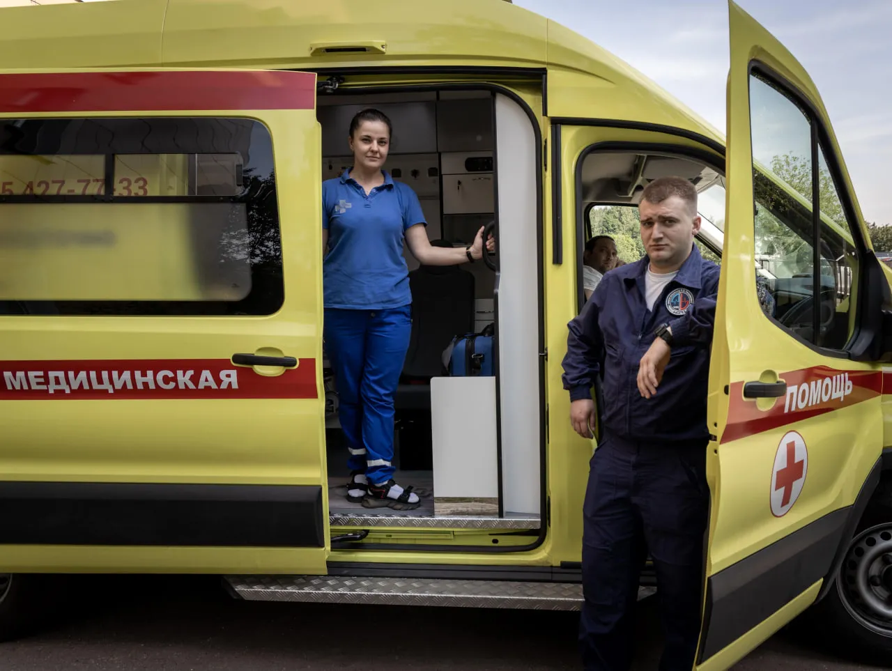
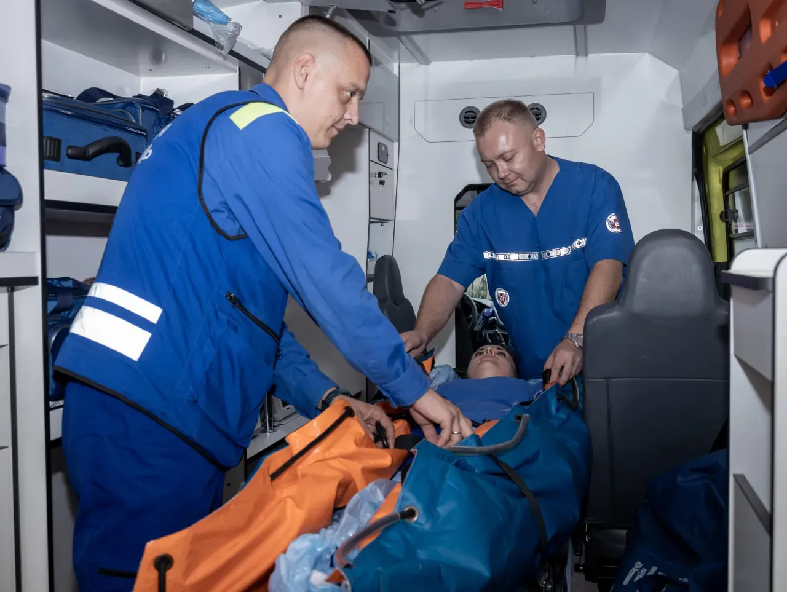
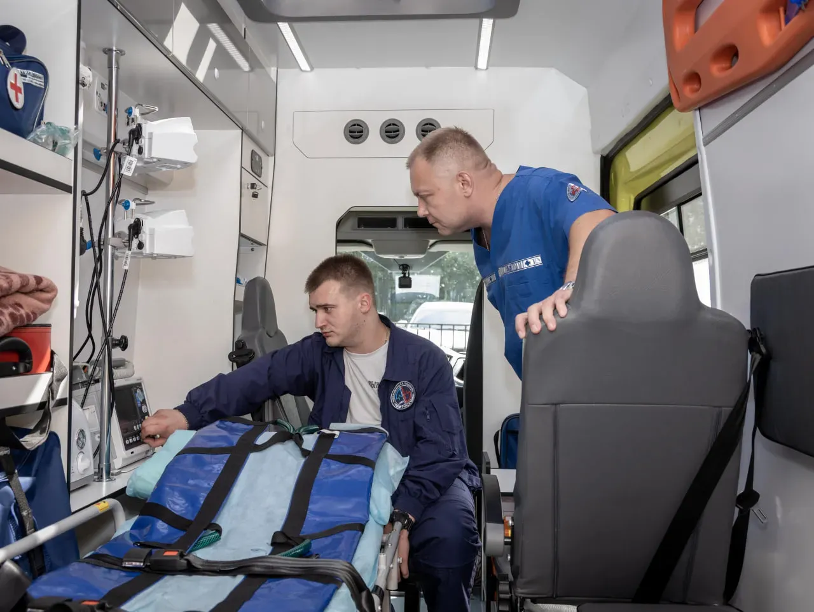

Опытные врачи
Медицинская служба на базе научного центра.
Медицинская служба РНЦХ
Врачебные, детские и реанимационные бригады. Позвоните диспетчеру, чтобы уточнить возможность выезда и стоимость помощи.
+7 (495) 427-77-33
Медицинская служба на базе научного центра.
Автомобили и оборудование для оказания неотложной помощи.
Условия перевозки и госпитализации обсудите с диспетчером.
Врачебная бригада на дом. Уточните симптомы и адрес при обращении.
Возраст ребёнка и возможность выезда уточняются у диспетчера.
Состав бригады и маршрут подбираются с учётом состояния пациента.

РНЦХ им. акад. Б.В. Петровского
Служба неотложной помощи НКЦ № 2. Условия перевозки и госпитализации обсудите с диспетчером.
Об отделении на Med.ruПорядок обращения
Расскажите, что произошло, и назовите возраст пациента.
Сообщите точный адрес. Обсудите бригаду, стоимость и время прибытия.
Следуйте указаниям диспетчера и обеспечьте доступ к пациенту.
Стоимость и условия
Тарифы из открытого прейскуранта Med.ru.
Актуальность и состав услуг — на подтверждение.
Врачебная бригада
В пределах МКАД
Уточнить выездПедиатрическая бригада
В пределах МКАД · возраст на согласование
Уточнить выездРеанимационная бригада
В пределах МКАД
Уточнить выездЗа МКАД до 25 км: врачебная бригада — 15 000 ₽; детская и реанимационная — 17 000 ₽. Другие маршруты и возможные доплаты уточняйте по телефону.
Ответы перед вызовом
На срочные вопросы диспетчер ответит по телефону.
Позвонить диспетчеруВремя зависит от адреса, дорожной обстановки и доступности бригады. Ориентир сообщит диспетчер. Оффер «В пределах ТТК за 15 минут» пока находится на согласовании.
На Med.ru указана педиатрическая бригада. Возрастные границы, включая помощь с рождения и до 18 лет, а также действующий детский тариф требуют подтверждения.
Состав специалистов, оборудование, расходные материалы и количество сопровождающих уточняются. Полный перечень вопросов вынесен на страницу согласования.
Маршрут и условия согласуются с диспетчером. Нужно подтвердить перечень отделений РНЦХ и других больниц, стоимость перевозки и условия ОМС.
Сообщите диспетчеру о состоянии пациента и употреблении алкоголя. Возможность выезда и условия помощи уточняются по телефону. Перечень услуг и тарифы в таких случаях требуют подтверждения службы.
Сообщите диспетчеру о состоянии пациента и возможном употреблении веществ. Возможность выезда, вид помощи и условия госпитализации уточняются по телефону. Услуги и тарифы в таких случаях требуют подтверждения службы.
На Med.ru указан круглосуточный режим службы. Доступность каждого типа бригады ночью, в выходные и праздничные дни необходимо подтвердить.




Связь со службой
Диспетчер обсудит адрес, стоимость и порядок обращения.
Подробные тарифы НКЦ № 2
Вызов бригады, медицинское сопровождение и транспортировка.
Осмотр, сбор анамнеза, ЭКГ, глюкометрия, пульсоксиметрия, оказание неотложной помощи.
НКЦ № 2Осмотр, сбор анамнеза, ЭКГ, глюкометрия, пульсоксиметрия, оказание неотложной помощи.
НКЦ № 2Осмотр, сбор анамнеза, ЭКГ, глюкометрия, пульсоксиметрия, оказание неотложной помощи.
НКЦ № 2Осмотр, сбор анамнеза, ЭКГ, глюкометрия, пульсоксиметрия, оказание неотложной помощи.
НКЦ № 2